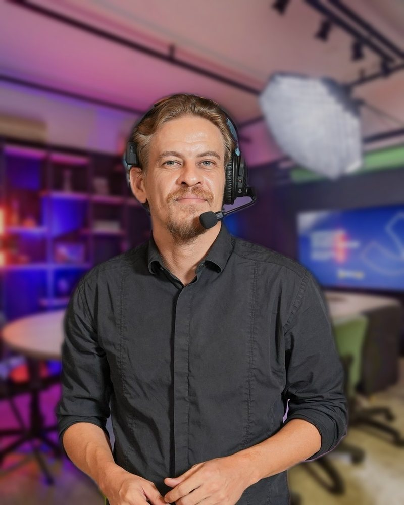

Storymaker · Storymaker mobile · Social media
Aprenda a captar, organizar e contar a história de eventos e negócios com o celular.
Checklists, modelos, planilha e e-book para planejar a cobertura, saber o que gravar, escolher as cenas e entregar no mesmo dia, com o celular que você já tem.
Método desenvolvido pela DocMe Comunicação.
Se você já pensou isso, está no lugar certo
As dúvidas mais comuns de quem está começando, e onde cada uma é tratada.
Chego ao evento e fico sem saber o que gravar primeiro.
Os primeiros 15 minutos e a sequência que conta a história estão no Checklist de cobertura. O mapa do evento na chegada está no Checklist de pré-produção.
Faço imagens bonitas, mas não consigo transformar tudo numa história.
O roteiro previsto e a ordem lugar, pessoas, atrações, momentos e encerramento estão no e-book Do briefing à história e no Checklist de cobertura.
Tenho dificuldade para entender o que o cliente espera.
O Modelo de briefing conduz a reunião pergunta por pergunta. O e-book Do briefing à história explica o porquê de cada uma.
Não sei como organizar cenas abertas, médias e fechadas.
A variação de planos aparece no caminho de captação do Checklist de pré-produção e em cada vídeo do Checklist de cobertura.
Quero entregar no mesmo dia, mas me perco na edição.
O Checklist de pós-produção organiza o Reels final antes de ir embora: o que juntar, o que tirar, a ordem e a duração.
Não sei como calcular reunião, pesquisa, deslocamento, cobertura e pós-produção no orçamento.
A Planilha de custos e horas soma todas essas etapas, uma por linha, e inclui abas de equipe e hora extra.
Tenho receio de perder um momento importante, como uma fala, uma entrada ou o parabéns.
A lista A/B/C de pessoas está no Modelo de briefing. Fonte principal e backup de som estão no Checklist de áudio.
Não sei como lidar com atraso, mudança de programação, bateria ou falha de áudio.
O e-book Do briefing à história tem capítulos sobre programação que muda, atrasos e bateria. O Checklist de cobertura e o Checklist de áudio trazem o que fazer na hora.
Sou fotógrafo ou videomaker e quero ampliar meu repertório para o celular.
O e-book Do briefing à história foi escrito também para quem já domina a câmera e ainda pensa em "editar depois".
Quero começar com algo simples, como um pequeno estabelecimento.
Comece pelo Checklist de pré-produção e pelo Modelo de briefing: servem para uma padaria, um salão ou uma comemoração da família.
Comece pequeno
Você não precisa começar por um grande evento.
Dá para treinar com um estabelecimento do bairro, um pequeno negócio, uma comemoração ou um evento perto de você. Combine antes o que vai ser gravado, quem aprova e onde vai ser publicado, e peça as autorizações de imagem.
Fazer um primeiro trabalho para montar portfólio é uma escolha sua, não uma obrigação. Se decidir fazer, combine o escopo por escrito, como em qualquer trabalho.
- Observar
- Planejar
- Captar
- Selecionar
- Editar
- Revisar
- Aprender
Os materiais mostram o caminho. O resultado vem da prática de cada um.
Trilha de materiais
Escolha por onde começar.
Do material gratuito ao e-book, cada degrau cuida de uma etapa do trabalho. Você compra só o que fizer sentido para você agora.
Carregando os materiais…

De onde vem o método
Conteúdo desenvolvido a partir da experiência da equipe da DocMe Comunicação.
+100
eventos produzidos pela DocMe: congressos, casamentos, festas tradicionais, ações sociais e pequenos negócios.
Quer ver o trabalho da equipe? Conheça a DocMe.
Perguntas frequentes
Antes de escolher
Para quem são os materiais?
Para iniciantes em audiovisual, fotógrafos que querem ampliar os serviços, videomakers que querem praticar a captação com o celular e a publicação em tempo real, quem trabalha com redes sociais e quem quer começar atendendo pequenos negócios e eventos locais.
Preciso ter experiência com fotografia ou vídeo?
Não. Os checklists e o material gratuito foram feitos para quem está começando. Quem já tem experiência aproveita o planejamento, o briefing e a organização da entrega.
Posso começar usando apenas o celular?
Sim. Os materiais partem do celular. Estabilizador, microfone e luz portátil aparecem como apoio, não como obrigação.
Posso estudar pelo celular?
Sim. Os materiais são arquivos digitais em PDF. A planilha abre no Excel, no Google Planilhas ou no LibreOffice; para preenchê-la, um computador é mais confortável.
Como recebo o material e onde faço o pagamento?
O pagamento e a entrega acontecem na plataforma de pagamento, pelo link do botão de cada material. As formas de pagamento, o prazo de acesso e as condições de arrependimento são as informadas na página de pagamento no momento da compra.
Qual é a diferença entre os materiais avulsos e o Kit Lançamento?
Os avulsos são comprados um a um. O Kit Lançamento reúne quatro materiais prontos (Checklist de pré-produção, Modelo de contrato, Planilha de custos e horas e o e-book Do briefing à história) por um preço menor que a soma deles.
As lives mensais já estão disponíveis?
Não. As lives estão previstas para uma fase futura e dependem de formulário, de um exercício prático e da aprovação do portfólio.
A compra garante trabalhos ou renda?
Não. Os materiais ensinam uma habilidade e organizam o trabalho. Contratações e resultados dependem da sua prática, da sua região e de cada cliente.
Ficou alguma dúvida?
Fale com a equipe pelo WhatsApp: +55 19 99861-2626.
Planeje, capte, selecione e entregue. Um degrau de cada vez.
Escolha o material da etapa em que você está e pratique no próximo evento ou negócio perto de você.
Método desenvolvido pela DocMe Comunicação.